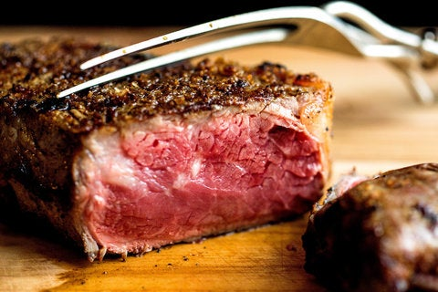

Perfectly Grilled Steak
By Julia Moskin

Description
Recipe Courtesy of Bobby Flay, a Perfectly Grilled Steak!
Ingredients
- 4 1.25 to 1.5 Inch Thick Boneless Rib Eye or New York Strip Steaks or Filet Mignons (8 to 10 ounces each), trimmed
- 2 Tbsp. Canola or Extra-Virgin Olive oil
- Kosher salt and freshly ground pepper.
Steps
- About 20 min. before grilling remove the steaks from the refrigerator and let sit, covered, at room temperature.
- Heat your grill to high. Brush the steaks on both sides with oil and season liberally with salt and pepper. Place the steaks on the grill and cook until golden brown and slightly charred, 4 to 5 minutes. Turn the steaks over and continue to grill 3 to 5 minutes for medium-rare, 5 to 7 minutes for medium, or 8 to 10 minutes for medium-well.
- Transfer the steaks to cutting board or platter, tent loosely with foil and let rest 5 minutes before slicing.
- Enjoy!